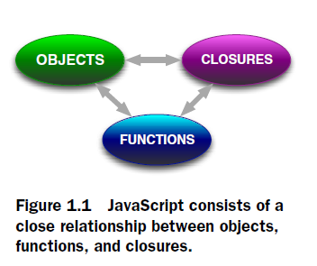

FP focuses on functions and their inputs and outputs. OOP is based on the principles of encapsulation, inheritance, polymorphism, and abstraction. FP is based on the principles of immutability, referential transparency, higher-order functions, and recursion
Javascript is a functional programming language. The level of the sophistication of all the code you’ll ever write in JavaScript hinges upon this realization. Java on the other hand is a non-functional programming language.

Both Hamburger and Ham have meat in them, likewise both Java and Javascript are programming languages that have a C-influenced syntax.
The single most important weapon to yield from Javascript is understanding functions in depth.
